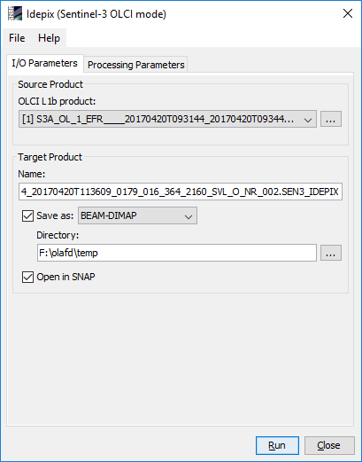
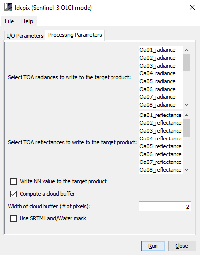
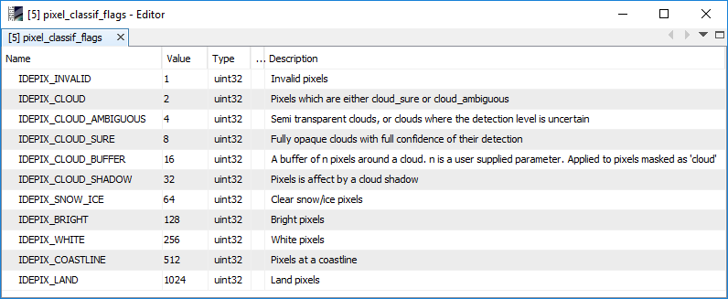
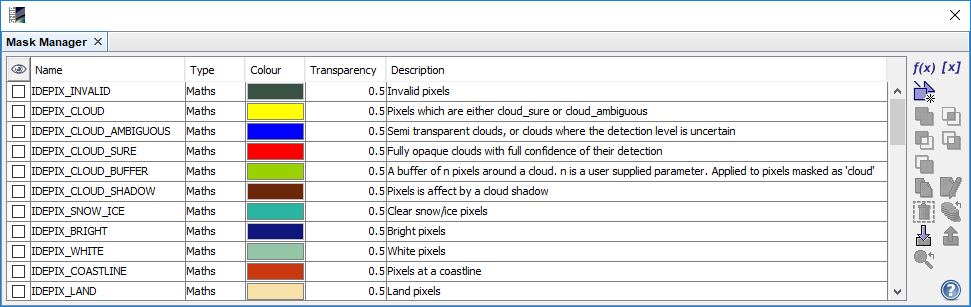

| SNAP Data Processors - Idepix Sentinel-3 OLCI Processor Description |
|

Name: Used to select the spectral source product. The source product shall contain spectral bands providing a source spectrum at each pixel. Use the ... button to open a data product currently not opened in the Sentinel Toolbox.
Name: Used to specify the name of the target product.
Save to: Used to specify whether the target product should be saved to the file system. The combo box presents a list of file formats.
Open in SNAP: Used to specify whether the target product should be opened in the Sentinel Toolbox. When the target product is not saved, it is opened in the Sentinel Toolbox automatically.

Select TOA radiances to write to the target product:
The TOA radiance bands from the source product which shall be written into the target product can be selected here.
Multiple selection is possible.
Select TOA reflectances to write to the target product:
The intermediately computed TOA reflectances bands which shall be written into the target product can be selected here.
Multiple selection is possible.
Write NN value to the target product:
If selected, the output value of the neural network
(floating point number on the interval [0.0, 5.0]) is written to the target product. The default is 'false'.
Compute cloud shadow:
If set, a cloud shadow is computed and added to the pixel classification. The default value is 'true'.
Compute a cloud buffer:
If set, a cloud buffer of certain width is computed and added to the pixel classification. The default value is 'true'.
Width of cloud buffer (# of pixels):
If a cloud buffer is computed, the buffer width (in # of pixels around the cloudy reference pixel) can be specified.
The default value is '2'.
Use SRTM Land/Water mask:
If set, a land/water mask derived from the SRTM (Shuttle Radar Topography Mission) dataset is used instead
of the land flag included in the Sentinel-3 OLCI L1b product. The SRTM land/water mask is usually more precise in specific
case (e.g. inland lakes), but slows down the processing speed. The default value is 'false'.

